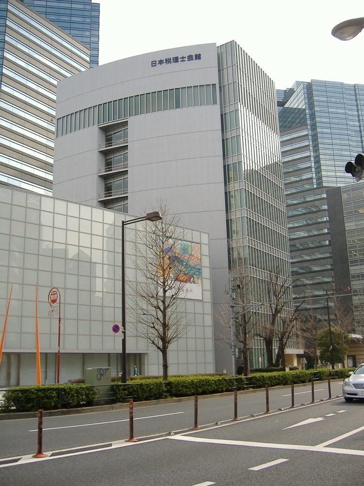

結論を先に示す 税理士法人の社員は税理士でなければならず、外部の資本は税理士法人に出資できない2。社労士法人も社員は社労士に限られる3。税理士法人化で資格者以外の所有を可能にする方法はない。創業者の会社が借入で買収できるのは、記帳代行・給与計算・経理代行・コンサルティングを行う周辺の株式会社に限られる。税務顧問の売上は税理士法人に帰属し、創業者のグループの連結売上にはならない。
所長が高齢の会計事務所に併設された株式会社と、記帳代行・給与計算の会社を融資で買収する。AIによる自動仕訳と給与計算の自動化を導入し、担当者1人当たりの顧客数を増やす。税務と社会保険の手続きは提携する税理士法人と社労士法人が行い、創業者の会社は経理と人事の事務を中小企業に月額で販売する。
総務省の統計で、会計事務所の売上高は2012年の1兆2,830億円から2021年の1兆9,023億円に増えた1。この区分には公認会計士事務所と監査法人も含まれる。税理士の登録者数は2022年に80,692人である1。社労士事務所の売上高は本ページでは確認できなかった。
推計 創業者の会社が所有できる市場 ＝ 会計事務所の売上 × 監査を除く比率 × 税理士業務以外の比率
監査を除く比率を80%、記帳代行・給与計算・経理代行などの税理士業務以外の比率を30%と仮定する。1兆9,023億円 × 0.8 × 0.3 ≒ 4,600億円となる。2つの比率は本ページの仮定値である。税理士業務の部分は約1.1兆円となるが、資格者以外は所有できない。
米国では、プライベートエクイティの資金が会計事務所に入っている。2025年3月の記事は、2025年末までに上位30社の半数超が投資ファンドに持分か事業の一部を売却するとの見通しを紹介している6。監査は会計士が所有する法人に残し、それ以外の業務を投資ファンドが所有する会社に移す構造が使われる7。米国公認会計士協会は2025年12月29日にこの構造の倫理規則の改正案を公表した8。
| 年 | 変化 | 数値 |
|---|---|---|
| 2012〜2021年 | 会計事務所の売上の増加 | 1兆2,830億円から1兆9,023億円へ48%増1 |
| 2025年時点 | 税理士の高齢化 | 60代以上が半数以上、40代以上が約90%1 |
| 2025年 | 事務所の譲渡価格の慣行 | 年間顧問料の1年分を基準とすることが多い。営業利益の2〜3年分を基準とする方法もある1 |
| 2025年10月 | 社労士法の改正法の施行 | 社労士法人の社員は社労士でなければならない旨を第25条の8に規定3 |
| 2025年12月 | 米国の会計事務所への投資ファンドの出資 | 米国公認会計士協会が規則の改正案を公表8 |
所長の半数以上が60代以上で、引退に伴う事務所の譲渡が増える。生成AIで仕訳と書類の作成を自動化できるようになり、担当者1人が受け持てる顧客数を増やせる。米国では同じ時期に投資ファンドが会計事務所を買収しているが、日本の税理士法は資格者以外の所有を認めていない。
| 事業者 | 規模 | 備考 |
|---|---|---|
| 辻・本郷税理士法人 | 職員2,000名超、88拠点 2024年4 | 売上高は確認できなかった。職員1人当たり1,000万円と仮定すると約200億円 |
| 税理士法人山田&パートナーズ | 従業員1,058名 2026年7月5 | 売上高は非公開5 |
| 監査法人系の税理士法人 | 未確認 | 大手監査法人のグループに属する税理士法人。売上高は本ページでは確認できなかった |
上位の税理士法人でも、推計の売上は会計事務所の売上1兆9,023億円の1%程度である。分散した市場であるが、統合を進めるのは税理士自身である。
| 条文 | 内容 | ロールアップへの影響 |
|---|---|---|
| 税理士法 第48条の4 | 税理士法人の社員は税理士でなければならない2 | 創業者の会社は税理士法人に出資できない |
| 税理士法 第52条 | 税理士又は税理士法人でない者は税理士業務を行ってはならない。違反は2年以下の拘禁刑又は100万円以下の罰金2 | 税務代理・税務書類の作成・税務相談は創業者の会社では行えない |
| 税理士法 第37条の2 | 税理士は第52条に違反する者に自己の名義を利用させてはならない2 | 創業者の会社が税理士の名義で顧客を抱えると違反になる |
| 税理士法 第2条第2項 | 税理士は税理士業務に付随して財務書類の作成や記帳代行を行える2 | 記帳代行は税理士業務に含まれず、税理士以外の会社も行えると本ページでは解釈する |
| 社労士法 第25条の8 | 社労士法人の社員は社労士でなければならない3 | 創業者の会社は社労士法人に出資できない。給与計算は社労士の独占業務に含まれないと本ページでは解釈する |
回避できない。税理士法人は、税理士業務を組織的に行うことを目的として税理士が共同して設立する法人である2。社員は税理士に限られ、資格者以外が出資する道を開くものではない。創業者に可能な形は2つである。
創業者の会社が税理士法人の意思決定を実質的に支配すると、第52条と第37条の2の脱法と見なされるおそれがある。どこまでの関与が認められるかは、所轄の税理士会と国税庁の判断による。

首位の条件 会計事務所の市場で首位になるには税務顧問の売上を所有する必要があり、資格者以外には満たせない。創業者の会社が首位を狙えるのは、中小企業向けの経理代行と給与計算の市場である。この市場の規模を示す統計は本ページでは確認できなかった。条件は3つある。①提携する税理士法人と社労士法人の顧客を、経理と給与の代行の顧客にすること。②AIによる自動仕訳で、担当者1人当たりの顧客数を他社より大きくすること。③提携する資格者法人の独立性を保ったまま、全国に提携先を増やすこと。
1社目は、会計事務所に併設された株式会社か、独立した記帳代行・給与計算の会社を融資で買収する。同時に、承継する所長の事務所を提携する税理士が税理士法人として引き継ぐ。
| 用途 | 金額 | 検証すること |
|---|---|---|
| 検索期間の生活費と活動費 6か月 | 500万円 | 所長の引退と併設会社の売却を同時に進められる事務所が何件あるか |
| 財務・労務・法務の調査、仲介手数料、税理士法の法務確認 | 900万円 | 業務委託契約が第52条と第37条の2に抵触しないか、弁護士の意見を得る |
| 1社目の株式取得の自己資金 | 2,100万円 | EBITDA1,500〜2,500万円の会社を約1.2億円で取得できるか |
| 自動仕訳と給与計算の自動化の導入 | 500万円 | 担当者1人当たりの顧客数を25社から40社に増やせるか |
| 合計 | 4,000万円 |
| 月 | 計画 |
|---|---|
| 1〜3月目 | 提携する税理士を1名決める。所長が65歳以上・顧客200社以上・併設の株式会社あり、の条件を満たす事務所を30件集める |
| 4〜6月目 | 3件と面談し1件と基本合意する。顧客ごとの契約主体が事務所と株式会社のどちらかを確認する |
| 7月目 | 創業者の会社が併設の株式会社を取得する。資金は自己資金2,100万円、日本政策金融公庫の事業承継向け融資約6,000万円9、地銀の融資約3,000万円、売主への分割払い約900万円とする。提携する税理士は事務所の承継を別に行う |
| 8〜12月目 | 旧所長を顧問として残し、顧客の離反を防ぐ。自動仕訳を全顧客に導入する。2件目の候補を同じ地域で3件まで絞る |
1年目の判定基準は、顧客の解約率が年5%以下で、担当者1人当たりの顧客数が3割以上増えることである。
| 段階 | 資金 | 金融機関 | 条件 |
|---|---|---|---|
| 1社目 1年目 | 事業承継融資、買収融資、売主の分割払い | 日本政策金融公庫 国民生活事業、地銀 | 公庫の限度は別枠7,200万円9。担保がないため、地銀は月額顧問料の継続を返済原資として評価する |
| 提携法人の承継 | 税理士法人の借入 | 日本政策金融公庫、地銀 | 借り手は税理士法人である。創業者の会社は保証しない |
| 2〜5社目 2〜4年目 | 持株会社による買収融資、資本性劣後ローン | 地銀、商工中金、日本政策金融公庫 中小企業事業 | 資本性ローンの限度は15億円、期限一括返済で最長20年10 |
| 6社目以降 5年目以降 | シンジケートローン | メガバンク、地銀の協調融資 | 連結EBITDAの3倍を上限に借りる。顧問契約の解約に備え、運送や警備より低い倍率に留める |
創業者のグループが所有する株式会社の連結の数値である。提携する税理士法人と社労士法人の売上は含めない。
| 年目 | 1 | 2 | 3 | 5 | 7 | 10 |
|---|---|---|---|---|---|---|
| グループ会社数 | 1 | 3 | 7 | 20 | 40 | 80 |
| 売上高 億円 | 1.5 | 4 | 9 | 28 | 65 | 150 |
| 営業利益 億円 | 0.15 | 0.5 | 1.2 | 4 | 9.5 | 22 |
| 累計投資 億円 | 1.2 | 3.5 | 8 | 24 | 55 | 120 |
| 借入残高 億円 | 1.1 | 3 | 6.5 | 18 | 40 | 80 |
| 年目 | 1 | 2 | 3 | 5 | 7 | 10 |
|---|---|---|---|---|---|---|
| グループ会社数 | 1 | 2 | 3 | 6 | 10 | 18 |
| 売上高 億円 | 1.5 | 2.5 | 4 | 9 | 16 | 30 |
| 営業利益 億円 | 0.1 | 0.2 | 0.35 | 0.9 | 1.8 | 3.6 |
| 累計投資 億円 | 1.2 | 2.0 | 3.2 | 7 | 12 | 22 |
| 借入残高 億円 | 1.1 | 1.7 | 2.6 | 5.5 | 9 | 15 |
前提
楽観でも10年目の売上高は150億円で、1,000億円の目安に届かない。提携する税理士法人の税務顧問の売上を合算すると約2倍以上になる可能性があるが、創業者のグループは所有も連結もできない。保守では18社、売上高30億円に留まる。
会計事務所の市場1兆9,023億円で首位になる道筋はない。首位の条件である税務顧問の売上を、資格者以外は所有できないからである。
創業者の会社が所有できる推計約4,600億円の周辺業務で見ると、楽観の150億円は約3.3%である。この市場には給与計算と経理代行の専業会社も含まれる。その各社の売上は本ページでは確認できず、首位になるかは判定できない。
停止する位置は3つある。1つ目は1件目で、提携する税理士と創業者の方針が合わず提携が解消される場合である。この場合は顧客が税理士法人とともに離れる。2つ目は税理士会か国税庁が、業務委託の形態を第52条の脱法と判断する場合である。3つ目は会計ソフトの自動仕訳が普及し、記帳代行の単価が下がる場合である。
税務と社会保険の手続きは国ごとの制度に依存し、日本の資格は海外で使えない。米国では投資ファンドによる会計事務所の買収が進んでおり6、後発の日本の中小グループが海外で買い手として競える見込みは低い。
| 順 | 国 | 理由 |
|---|---|---|
| 1 | ベトナム、フィリピン | 日本語の記帳と給与計算の作業を海外拠点で行い、国内の人手不足を補う |
| 2 | タイ、シンガポール | 日系の中小企業の現地法人に、経理と給与の代行を提供する |
グローバルなインフラになる見込みは低い。
| # | 基準 | 判定 | 根拠 |
|---|---|---|---|
| 1 | 50年、魂を燃やし続けられるか | 創業者が判定 | |
| 2 | 10年以内に、国内市場規模1,000億円以上の市場でシェア1位になれるか | × | 首位の条件である税務顧問の売上を資格者以外は所有できない。周辺業務の市場でも楽観で約3.3%に留まる |
| 3 | 4,000万円で始められ、融資で伸ばせるか | △ | 周辺の株式会社は約1.2億円で取得できる。ただし顧問契約は税理士法人に残るため、融資の担保となる価値が低い |
| 4 | グローバルなインフラになり得るか | × | 税務と社会保険は国ごとの制度で、日本の資格は海外で使えない |
| 5 | 営業力が最初の売上に直接結びつくか | △ | 顧客は中小企業と個人事業主で、紹介で増えることが多い。大企業への法人営業が直接結びつく場面は限られる |
| 6 | 同じビジョンを共有する仲間を誘える事業か | 創業者が判定 | |
| 7 | 本業が早く現金を生み、返済と出資の原資になるか | ◎ | 月額の継続収入で設備投資が小さく、利益率は10%以上を見込める |
| 8 | 投資先を束ねる群の中核になれるか | ○ | 提携法人の顧客である中小企業が、承継の仲介と他の案の買収の案件源になる。守秘義務の範囲に限られる |
| 9 | 成長の資金源がA・B・Cのどれに当たるか | C | 借入で買収するが、対象は周辺業務の株式会社に限られる |
1. 税理士法違反と判断されること 創業者の会社が提携法人の顧客と報酬を実質的に支配すると、第52条と第37条の2の脱法と見なされるおそれがある2。対策は業務委託の範囲と報酬を事前に弁護士と所轄の税理士会に確認し、提携法人の独立性を契約で保つことである。監督官庁の解釈は創業者が変えられないため、完全には潰せない。
2. 提携の解消 顧客の信頼は税理士個人にある。提携する税理士が離れると、顧客もともに離れる。対策は複数の税理士と提携し、1法人への依存を下げることである。資本で結べない以上、提携の継続は保証できない。
3. 記帳代行の単価の下落 会計ソフトの自動仕訳とAIが普及すると、顧客は自社で記帳できる。創業者の会社が所有できる業務の単価が下がる。対策は記帳から経理と給与の業務全体の代行に移ることである。自動化が進むほど所有できる業務の価値が下がる構造は潰せない。
4. 所長の引退後の顧客の離反 旧所長が退くと、顧客が別の事務所に移る。対策は旧所長を1〜2年顧問として残し、売主への分割払いを顧客の継続に連動させることである。
5. 資格者の採用難 税理士の60代以上が半数以上で1、提携先になる若い税理士は少ない。提携先を増やせなければ買収の数も増やせない。対策は税理士試験の受験者を雇用し、資格の取得を支援することである。育成には年単位の時間がかかる。